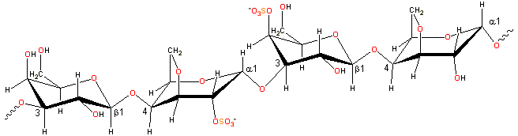

Rhodophycae
 from Baker, A.L. et al. 2012. Phycokey -- an image based key to Algae (PS Protista), Cyanobacteria, and other aquatic objects. University of New Hampshire Center for Freshwater Biology. http://cfb.unh.edu/phycokey/phycokey.htm 17 May 2014")
Carrageenans form gels at low concentrations.
Carrageenan (E407) is a collective term for scaffolding polysaccharides prepared by alkaline extraction (and modification) from red seaweed (Rhodophycae) [1571], mostly of genus Chondrus, Eucheuma, Gigartina, and Iridaea. Different seaweeds produce different carrageenans. Seaweed farming is environmentally friendly as it is sustainable and does not involve fertilizers.
Representative carrageenan structure

Carrageenan consists of alternating 3-linked-β-D-galactopyranose and 4-linked-α-D-galactopyranose units.
[Back to Top  ]
]
Carrageenans are linear polymers of about 25,000 galactose derivatives with regular but imprecise structures, dependent on the source and extraction conditions [292]. Idealized structures are given below, and κ-carrageenan, for example, has been found to contain a small proportion of the dimer associated with ι-carrageenan.
-(1 3)-β-D-galactopyranose-4-sulfate-(1
3)-β-D-galactopyranose-4-sulfate-(1 4)-3,6-anhydro-α-D-galactopyranose-(1
4)-3,6-anhydro-α-D-galactopyranose-(1 3)-
3)-
Alkaline conversion of mu- to kappa-carrageenan
κ-carrageenan is produced by alkaline elimination from μ-carrageenan [1623] isolated mainly from the tropical seaweed Kappaphycus alvarezii (also known as Eucheuma cottonii). The experimental charge/dimer is 1.03 rather than 1.0 with 0.82 molecules of anhydrogalactose rather than one.
-(1 3)-β-D-galactopyranose-4-sulfate-(1
3)-β-D-galactopyranose-4-sulfate-(1 4)-3,6-anhydro-α-D-galactopyranose-2-sulfate-(1
4)-3,6-anhydro-α-D-galactopyranose-2-sulfate-(1 3)-
3)-
Alkaline conversion of nu- to iota-carrageenan
ι-carrageenan is produced by alkaline elimination from ν-carrageenan isolated mainy from the Philippines seaweed Eucheuma denticulatum (also called Spinosum). The experimental charge/dimer is 1.49 rather than 2.0 with 0.59 molecules of anhydrogalactose rather than one. The three-dimensional structure of the ι-carrageenan double helix has been determined [247] as forming a half-staggered, parallel, threefold, right-handed double helix, stabilized by interchain O2-H···O-5 and O6-H···O-2 hydrogen bonds between the β-D-galactopyranose-4-sulfate units (see structure). The structures of some calcium iota-carrageenans have been determined [1365], as have the structures in the presence of NaCl, [4305].
-(1 3)-β-D-galactopyranose-2-sulfate-(1
3)-β-D-galactopyranose-2-sulfate-(1 4)-α-D-galactopyranose-2,6-disulfate-(1
4)-α-D-galactopyranose-2,6-disulfate-(1 3)
3)
Slow alkaline conversion of lambda- to theta-carrageenan
λ-carrageenan (isolated mainly from Gigartina pistillata or Chondrus crispus) is converted into θ-carrageenan (theta-carrageenan) by alkaline elimination, but at a much slower rate than causes the production of ι-carrageenan and κ-carrageenan. The experimental charge/dimer is 2.09 rather than 3.0 with 0.16 molecules of anhydrogalactose rather than zero.
The torsion angles phi (φH, H1C1OC4 or H1C1OC3), psi (ψH, C1OC4H4 or C1OC3C3) have been determined for λ-, μ- and ν-carrageenans [1095]. All carrageenans are highly flexible molecules that, at higher concentrations, wind around each other to form double-helical zones. Gel formation in κ- and ι-carrageenans involves helix formation on cooling from a hot solution together with gel-inducing and gel-strengthening K+ or Ca2+ cations, respectively. You cannot use Na+, although Na+ does take part in an aggregation process to form weak gels with κ-carrageenan due to phase separation [723]). Such phase separation aids helix formation but subsequently supports aggregating linkages between the helices so forming the junction zones. The strongest gels of κ-carrageenan are formed with K+ rather than Li+, Na+, Mg2+, Ca2+, or Sr2+ [1077]. Incomplete formation of 1C4 3,6-anhydro-links will reduce the extent of helix formation as the unbridged α-linked galactose residues may flip to the 4C1 conformation.
κ-Carrageenan forms stronger gels in D2O rather than H2O. This has been attributed to an increase in the number of double-helix aggregates rather than the fraction of helix formed, which differs little between the two solvents [1670]. An increase in the affinity of D2O molecules for each other relative to polysaccharide water linkages probably explains this.
Note that the gelling hydrocolloid agar is produced from the same family of seaweeds, the significant difference
being the presence of L- rather than D-3,6-anhydro-α-galactopyranose
units but still forming double-helical junction zones. [Back to Top  ]
]
Carrageenans are used mainly for thickening, suspending, and gelling. κ- and ι-carrageenans form thermoreversible gels on cooling in the presence of suitable counter-ions. κ-Carrageenan forms a firm, clear, if brittle, gel with poor freeze-thaw stability. The coil-double helix transition precedes a K+-induced aggregation of the helices [516]. κ-Carrageenan gels may be softened (and are generally regarded to be synergistically strengthened a) with locust bean gum. ι-Carrageenan has less specific ionic binding, but increased ionic strength allows helices to form junction zones in soft elastic gels with good freeze-thaw stability. λ-Carrageenan is non-gelling as the lack of the 1C4 3,6-anhydro-link enables the galactose residues to revert to their 4C1 conformation, which does not allow the initial double helix formation required for gelling. Additionally, the high density of charged sulfate groups encourages an extended conformation. λ-Carrageenan has been found to act as a cryoprotectant and improves the freeze-thaw behavior of locust bean gum.
κ-Carrageenan, at low (ppm) concentrations, stabilizes milk κ-casein products due to its charge interaction with the casein micelles (≈ 200 nm diameter). Their incorporation into the network prevents the whey from separating. Such complexes are soluble when both have the same charge and are held together by counter-ions or oppositely charged patches. Carrageenan is also used as a binder in cooked meats, as a thickener in toothpaste and puddings, and to firm up sausages. Knowledge of the thermal stability of κ-carrageenan has made it possible to predict the viscosity when κ-carrageenan solutions are heated [3351].
A cancer health scare, mainly from the University of Illinois, concerning degraded carrageenan has been examined by the European Commission Scientific Committee on Food. They found no evidence in support and state that carrageenan is safe to use in foods. Even liquid infant formulae have been allowed approved use. Thus, carrageenan is safe to use in foods, within current regulations [1684]. The controversy rumbles on [3101], however.
Interactive structures are available (Jmol). [Back to Top  ]
]
a However, a 2001 paper found no such synergy [290]. [Back]
Home | Site Index | Hydrocolloids | Polysaccharide hydration | hydrogen-bonding | LSBU | Top
This page was established in 2002 and last updated by Martin Chaplin on 23 August, 2021